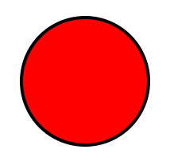
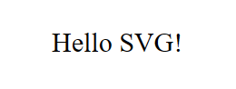

Introducción a SVG
SVG (Gráficos Vectoriales Escalables) es un formato de imagen basado en XML para gráficos bidimensionales con soporte para interactividad y animación. A diferencia de los gráficos rasterizados, las imágenes SVG se pueden escalar a cualquier tamaño sin perder calidad, lo que las hace ideales para pantallas de alta resolución.
Ejemplos Básicos de SVG
Ejemplo de Círculo SVG
Este ejemplo muestra cómo dibujar un círculo en SVG.
<svg width="200" height="200" xmlns="http://www.w3.org/2000/svg">
<circle cx="100" cy="100" r="80" stroke="black" stroke-width="4" fill="red" />
</svg>El ejemplo anterior crea un círculo con un radio de 80px, ubicado en (100, 100) dentro de un lienzo SVG. El borde es negro y el relleno es rojo.
Ejemplo de Rectángulo SVG
A continuación te mostramos cómo crear un rectángulo en SVG:
<svg width="200" height="200" xmlns="http://www.w3.org/2000/svg">
<rect width="150" height="150" style="fill:blue;stroke:black;stroke-width:5;" />
</svg>El elemento <rect> define el rectángulo. El ancho y la altura definen el tamaño, y el estilo define el color de relleno y el borde del rectángulo.

Ejemplo de Línea SVG
Aquí tienes un ejemplo de una línea en SVG:
<svg width="200" height="200" xmlns="http://www.w3.org/2000/svg">
<line x1="10" y1="10" x2="200" y2="200" stroke="black" stroke-width="2" />
</svg>Este ejemplo dibuja una línea diagonal desde el punto (10,10) hasta (200,200). El borde es negro y el grosor de la línea es de 2px.

Ejemplo de Texto SVG
También puedes añadir texto a tus gráficos SVG. Aquí tienes un ejemplo:
<svg width="200" height="200" xmlns="http://www.w3.org/2000/svg">
<text x="50" y="100" font-size="30" fill="black">¡Hola SVG!</text>
</svg>Este ejemplo coloca el texto "¡Hola SVG!" en las coordenadas (50, 100) con un tamaño de fuente de 30px y color negro.
Formas y Caminos en SVG
Ejemplo de Camino SVG
Los caminos son muy poderosos en SVG y pueden utilizarse para crear formas complejas. Aquí tienes un ejemplo de un camino sencillo:
<svg width="200" height="200" xmlns="http://www.w3.org/2000/svg">
<path d="M10 80 C 40 10, 65 10, 95 80 S 150 150, 180 80" stroke="black" stroke-width="2" fill="transparent" />
</svg>Este camino comienza en (10, 80), hace una curva hasta (40, 10) y luego continúa hacia otra curva hasta (95, 80) con curvas suaves utilizando el comando "S".

Animando Elementos SVG
SVG te permite animar formas utilizando la etiqueta <animate> o animaciones CSS. Aquí tienes un ejemplo que anima un círculo:
<svg width="200" height="200" xmlns="http://www.w3.org/2000/svg">
<circle cx="50" cy="50" r="40" fill="blue">
<animate attributeName="cx" from="50" to="150" dur="2s" repeatCount="indefinite" />
</circle>
</svg>Este ejemplo anima el centro (cx) del círculo desde 50 hasta 150 durante 2 segundos, y se repite indefinidamente.
Recursos adicionales sobre SVG
Aprende más sobre SVG y sus capacidades:
MDN Web Docs - SVGVisor SVG
Especificación de SVG en W3Schools
Descargar Ejemplo SVG en PDF